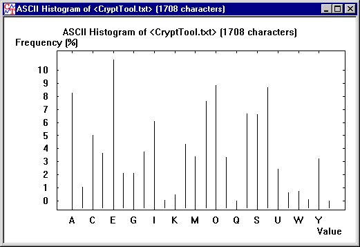
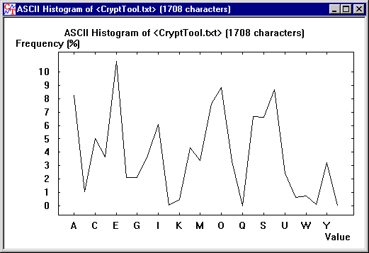

The histogram of a document expresses the frequency distribution of the characters of this document in graphical form in a corresponding window (plot type).

Selection of the histogram menu results initially in displaying a bar chart.
The x-axis of the histogram contains all the characters in the character set: In a text window the character set contains the letters of the alphabet selected in Text Options, while in a window for hexadecimal inputs and outputs, the character set contains the numbers 0 to 255 (see ASCII Table).
The frequency of each character is shown (as a percentage) on the vertical axis.
The data can also be displayed as a curve by deselecting Bar Chart in the View menu. Here you can toggle between the two histogram display types.

In both types of the diagram the line thickness can be varied via the Bar width field in the Drawing Parameters dialog.
The two diagrams above show the histogram of a text document. You can see, for example, that the character which occurs most frequently is "E", followed by "N".